FIP RANKING
Ranking internacional de los 10 mejores jugadores de padel masculino
- 1-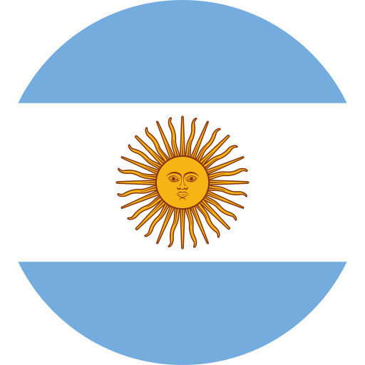 Agustin
Tapia
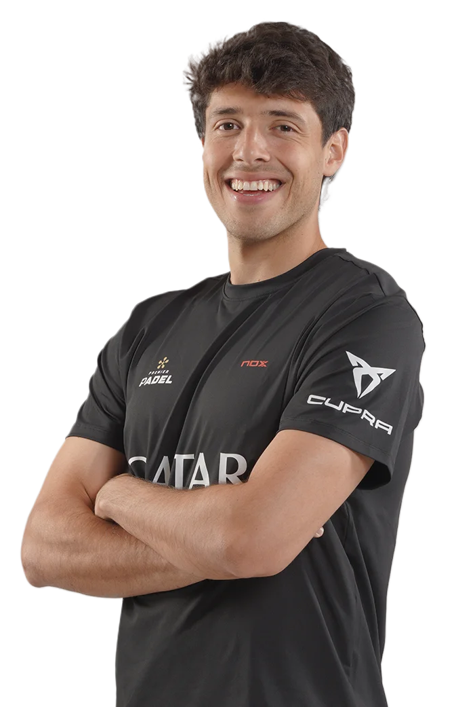 - 1-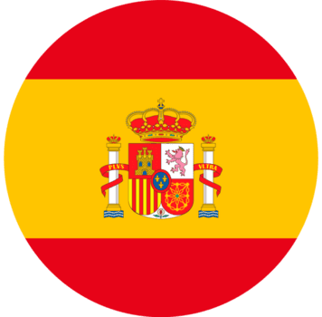Arturo
Coello
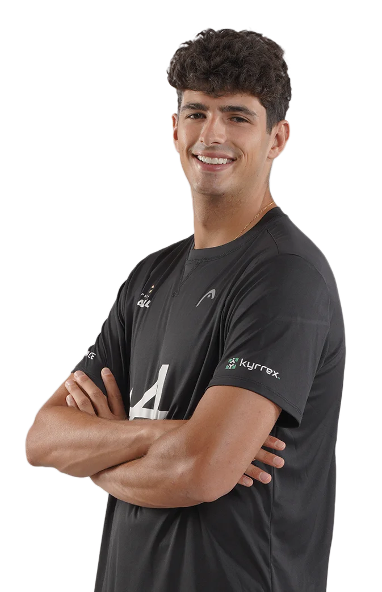 - 3-Alejandro
Galan
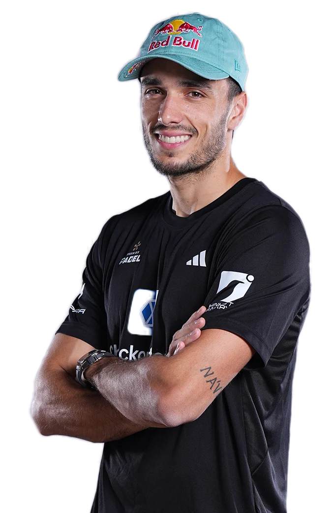 - 3-Federico
Chingoto
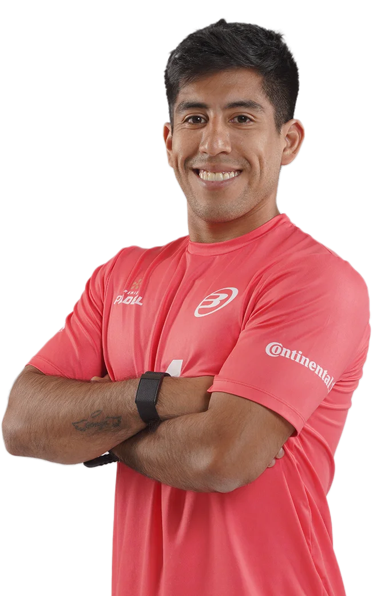 - 5-Franco
Stupaczuk
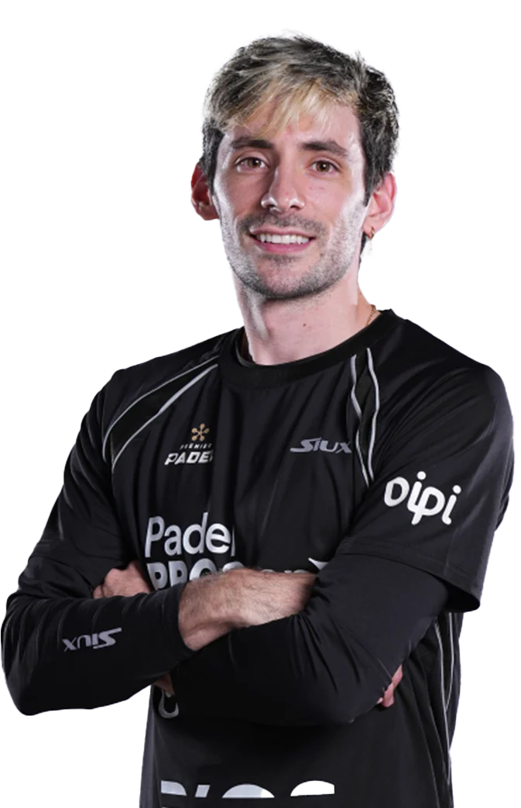 - 6-Juan
Lebron
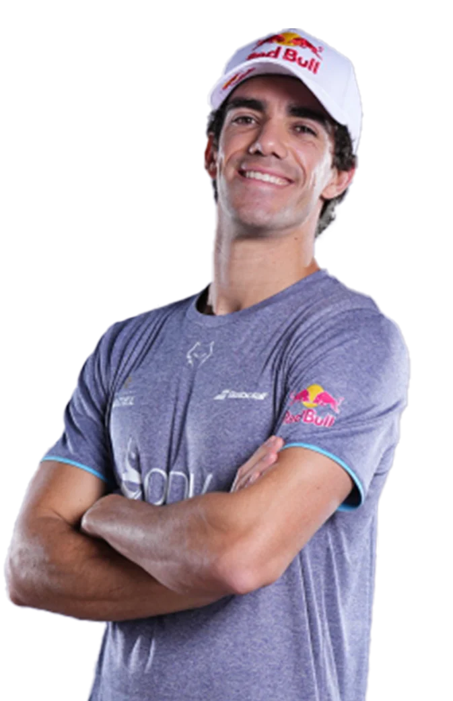 - 7-Jorge
Nieto
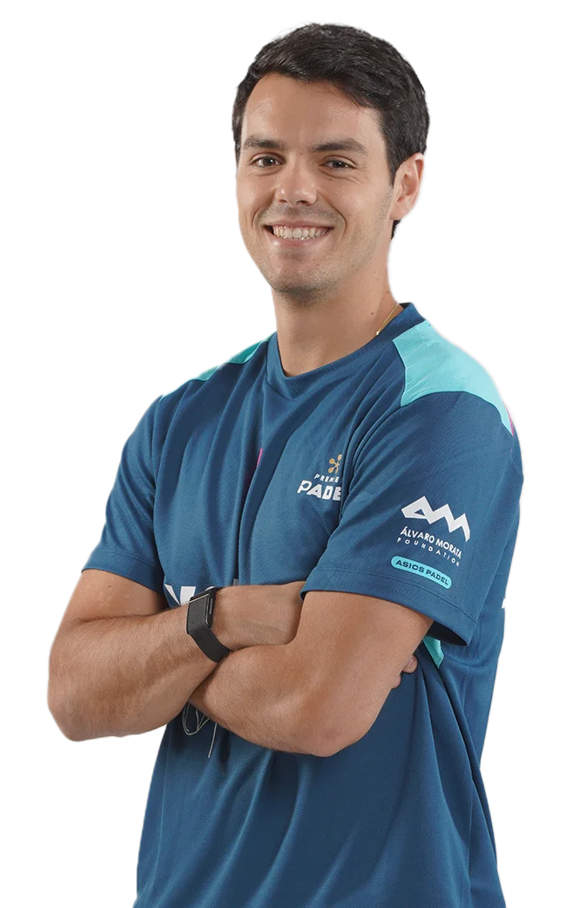 - 7-Miguel
Yanguas
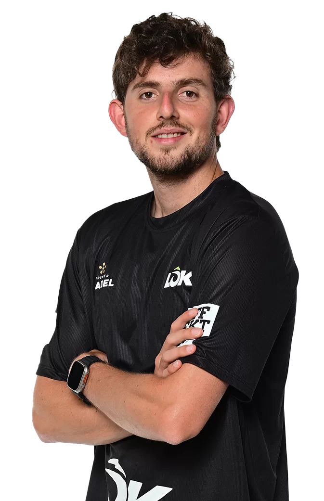 - 9-Francisco
Navarro
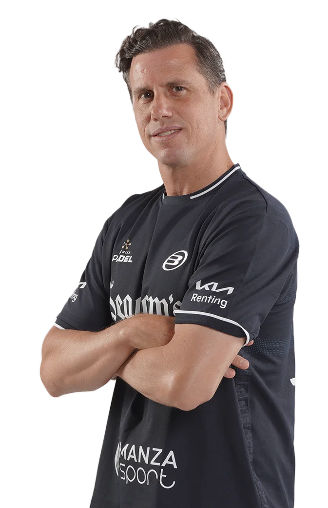 - 10-Leandro
Augsburger
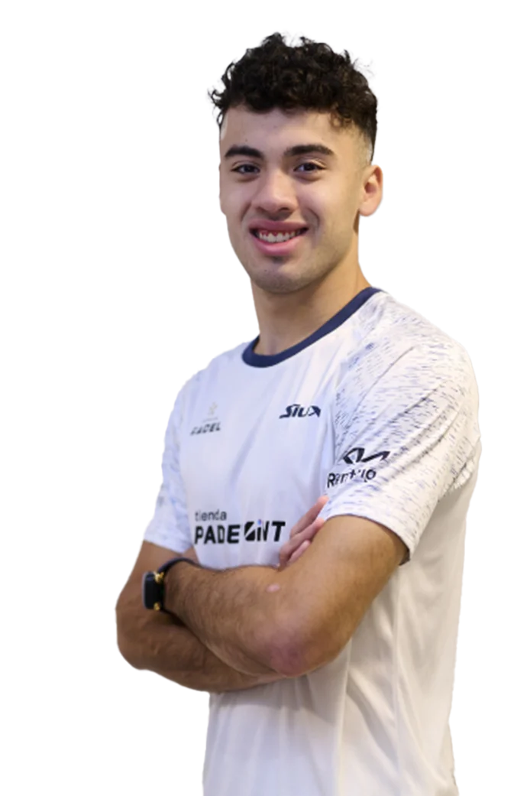
Los puntos FIP se obtienen participando y ganando partidos en torneos oficiales de la Federación Internacional de Pádel (FIP), como los Premier Padel y el CUPRA FIP Tour, donde mayor es la categoría del torneo y más rondas se avanzan, más puntos se consiguen; por ejemplo, ganar un torneo Platinum da 300 puntos y un torneo Gold da 150 puntos, sumándose a un ranking de 52 semanas donde los puntos se defienden o se pierden anualmente.